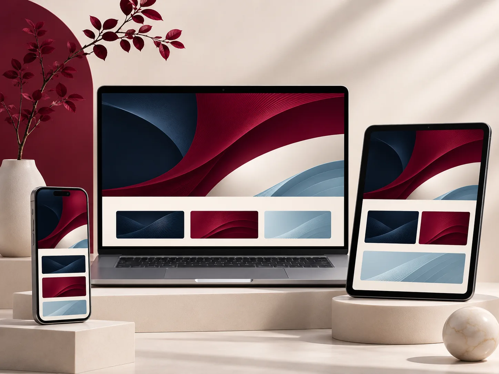
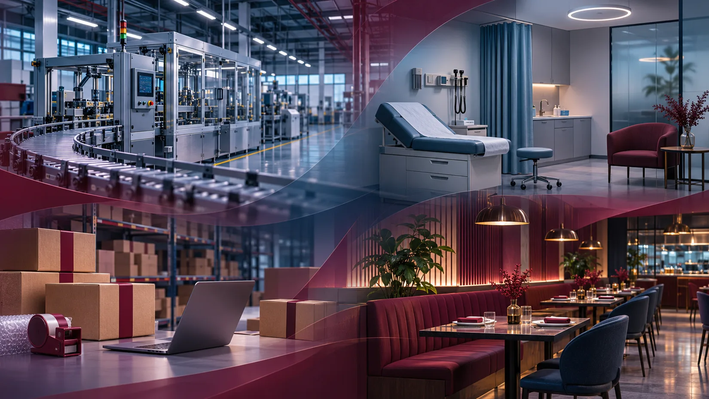

SEO
Technical fixes, content planning and search visibility aligned with qualified enquiries.
Explore SEO →Where does your next customer start? A patient may search Maps for a nearby clinic. An industrial buyer may search for a material specification. Choose a starting point that fits the way your customers buy.

Vayutech Global Solutions brings search, advertising and web development together around one question: what makes an enquiry worth following up? We start with your sales team’s answer and use it to plan the website and campaigns.
Established
Based in Navi Mumbai
Industry-focused marketing
Technical fixes, content planning and search visibility aligned with qualified enquiries.
Explore SEO →Help nearby customers discover your location and services on Google Search and Maps.
Explore Local SEO →Connect with people actively searching for your products and services.
Explore Google Ads →Match campaign messaging and audiences to your acquisition goals.
Explore Meta Ads →Make verified business information clear across emerging search experiences.
Explore GEO →Build a consistent brand presence and useful engagement across social channels.
Explore Social →Connect technical product information with buyer questions and RFQs.
Explore B2B SEO →Plan market-specific visibility for exporters and international businesses.
Explore International SEO →
Build a clear digital experience with accessible service information and enquiry paths.
Explore Website Development →Create product discovery and shopping experiences suited to your customers.
Explore Ecommerce →Manage your website and content through a flexible publishing platform.
Explore WordPress →Plan bespoke website functionality around business requirements.
Explore Custom Development →
Technical SEO, product information and RFQ-focused landing pages.
Mahape manufacturer · Five months
Punjab D2C brand · Approximately six weeks
Review demand, competition and existing website performance.
Build a roadmap around commercial opportunities.
Improve pages, campaigns and conversion paths.
Review enquiries, attribution and next actions.

A supplier in Rabale can sell nationally. A clinic in Vashi might rely on a much smaller service radius. We use your customer locations, order sizes and sales cycle to decide which markets to prioritise.
Your website, target market and examples of good and poor enquiries help us identify gaps in your current approach.
Yes. We can trace a customer journey from the first search to the landing page, enquiry form and sales follow-up.
Agree a baseline and timeframe. Track booked appointments, qualified RFQs or purchases alongside channel costs.
Tell us what you sell, whom you want to reach and where enquiries drop off today.